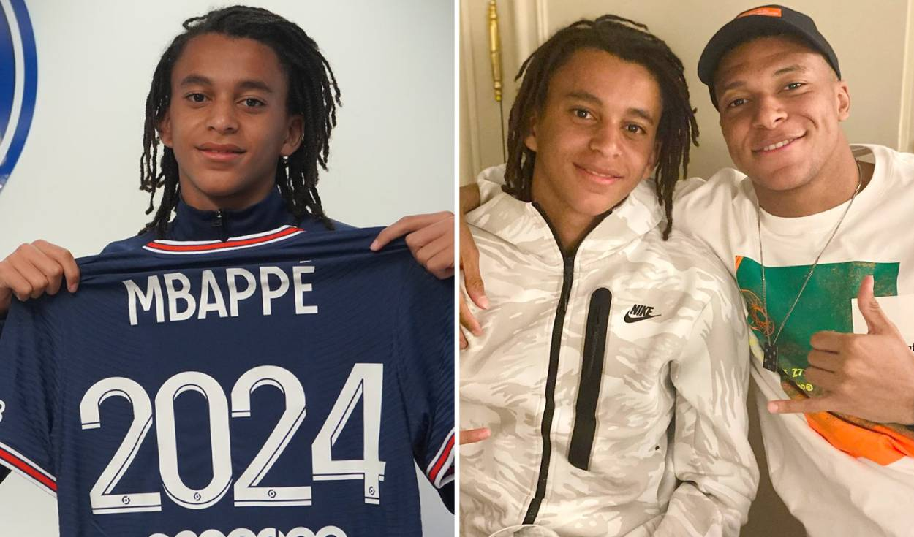

Bienvenidos a nuestra página web de Futbol! Aquí encontrarás todo lo que necesitas saber sobre los últimas, noticias y fichajes en el mundo del futbol. Somos una pagina apasionada por el futbol y estamos comprometidos en brindarte información precisa y actualizada sobre los equipos más populares del momento y de todas las ligas. Ya seas un espectador casual o un experto en el deporte, nuestra página web es el lugar perfecto para mantenerte al día con las últimas noticias en el mundo del deporte. ¡Explora nuestro sitio y descubre todo lo que tenemos para ofrecer.
Los Equipos Mas Populares Del Mundo
FC BARCELONA
El Fútbol Club Barcelona, conocido popularmente como Barça, es una entidad polideportiva con sede en Barcelona, Cataluña, España. Fue fundado como club de fútbol el 29 de noviembre.
REAL MADRID
El Real Madrid Club de Fútbol, más conocido simplemente como Real Madrid, es una entidad polideportiva con sede en Madrid, España.
BAYERN DE MUNICH
MANCHESTER CITY
El Bayern de Múnich, o simplemente Bayern, es una entidad deportiva profesional de la ciudad de Múnich, Alemania. Fue fundado el 27 de febrero de 1900.
El Manchester City Football Club, conocido como Manchester City, es un club de fútbol de la ciudad de Mánchester, Inglaterra, que juega en la Premier League. Fue fundado el 23 de noviembre de 1880.
FICHAJES DEL MOMENTO
KYLIAN MBAPPE
El delantero de 25 años "ya ha firmado" su contrato con el Real Madrid por las próximas cinco temporadas y que su fichaje será anunciado en el verano.
ETHAN MBAPPE

Tambien Firmaria Por El Real Madrid Por Pedido De Su Hermano Kylian Mbappe.